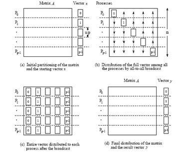
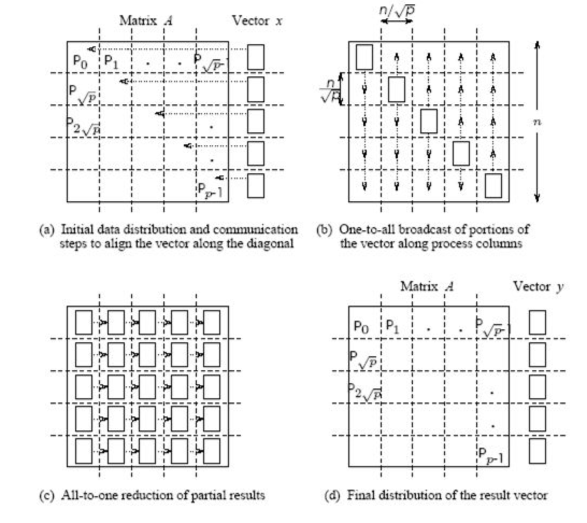
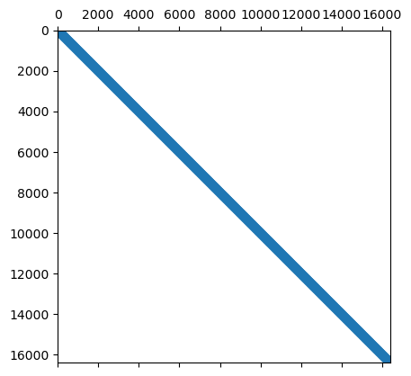
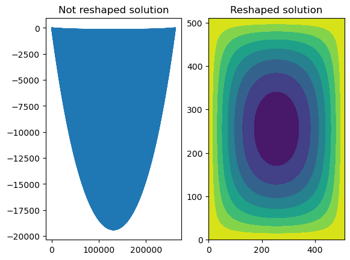

from IPython.display import IFrame
IFrame("http://yifanhu.net/GALLERY/GRAPHS/search.html", width=700, height=450)Краткий обзор предыдущей лекции
- Рандомизированное умножение матриц
- Оценка следа по методу Хатчинсона
- Рандомизированное SVD
- Метод Качмажа
План сегодняшней лекции
- Простая тема в параллельных вычислениях в линейной алгебре (на примере умножения матрицы на вектор)
- Часть о разреженных матрицах (с отдельным планом)
Матрицы большого размера
- Если размер плотной матрицы огромен, то она не может быть сохранена в памяти
- Возможные варианты
- Эта матрица структурированная, например, блочная теплицева с теплицевыми блоками (следующие лекции). Тогда возможно сжатое хранение
- Для неструктурированных плотных матриц помогает распределенная память
- MPI для обработки матриц с распределенным хранением
Распределенная память и MPI
- Разделение матрицы на блоки и хранение их на разных машинах
- Каждая машина имеет свое собственное адресное пространство и не может повредить данные на других машинах
- В этом случае машины взаимодействуют друг с другом для объединения результатов вычислений
- MPI (Message Passing Interface) - это стандарт для параллельных вычислений в распределенной памяти
Пример: умножение матрицы на вектор
- Предположим, что вы хотите вычислить Ax, и матрица A не может быть сохранена в доступной памяти
- Тогда вы можете разделить её на блоки и распределить блоки на отдельные машины
- Возможные стратегии
- 1D блочное разделение разбивает только строки на блоки
- 2D блочное разделение разбивает как строки, так и столбцы
1D blocking scheme

Total time of computing matvec with 1D blocking
- Each machine has $n / p $ complete rows and n / p elements of vector
- Total operations are n^2 / p
- Total time for sending and writing data are t_s \log p + t_w n, where t_s time unit for sending and t_w time unit for writing
2D blocking scheme

Общее время вычисления умножения матрицы на вектор с 2D блочным разделением
- Каждая машина имеет блок размера n / \sqrt{p} и n / \sqrt{p} элементов вектора
- Общее количество операций составляет n^2 / p
- Общее время для отправки и записи данных приблизительно равно t_s \log p + t_w (n/\sqrt{p}) \log p, где t_s - единица времени для отправки, а t_w - единица времени для записи
Пакеты, поддерживающие распределенное хранение
В Python вы можете использовать mpi4py для параллельного программирования вашего алгоритма.
- PyTorch поддерживает распределенное обучение и хранение данных, подробности здесь
Резюме по обработке больших неструктурированных матриц
- Распределенный способ хранения
- MPI
- Пакеты, использующие параллельные вычисления
- Различные стратегии блочного разделения
Введение в разреженные матрицы
Для задач плотной линейной алгебры мы ограничены памятью для хранения полной матрицы, это N^2 параметров.
Класс разреженных матриц, где большинство элементов равны нулю, позволяет нам как минимум хранить такие матрицы.
Вопрос в том, можем ли мы:
- решать линейные системы
- решать задачи на собственные значения
с разреженными матрицами
План следующей части лекции
Теперь мы поговорим о разреженных матрицах, где они возникают, как мы их храним, как мы с ними работаем.
- Форматы: список списков и формат сжатых разреженных строк, связь с графами
- Умножение матрицы на вектор
- Параллельная обработка разреженных матриц
- Быстрые прямые решатели для метода Гаусса (начало)
Применения разреженных матриц
Разреженные матрицы возникают в:
- дифференциальных уравнениях в частных производных (ДУЧП), математическом моделировании
- анализе графов, например, при анализе социальных сетей
- рекомендательных системах
- везде, где отношения между объектами являются “разреженными”.
Разреженные матрицы повсеместны в ДУЧП
Простейшее дифференциальное уравнение в частных производных (ДУЧП), называемое
Уравнение Лапласа:
\Delta T = \frac{\partial^2 T}{\partial x^2} + \frac{\partial^2 T}{\partial y^2} = f(x,y), \quad x,y\in \Omega\equiv[0,1]^2,
T_{\partial\Omega} = 0.
Discretization
\frac{\partial^2 T}{\partial x^2} \approx \frac{T(x+h) + T(x-h) - 2T(x)}{h^2} + \mathcal{O}(h^2),
same for \frac{\partial^2 T}{\partial y^2}, and we get a linear system.
First, let us consider one-dimensional case:
После дискретизации одномерного уравнения Лапласа с граничными условиями Дирихле мы получаем
\frac{u_{i+1} + u_{i-1} - 2u_i}{h^2} = f_i,\quad i=1,\dots,N-1
u_{0} = u_N = 0 или в матричной форме
A u = f, и (для n = 5) A=-\frac{1}{h^2}\begin{bmatrix} 2 & -1 & 0 & 0 & 0\\ -1 & 2 & -1 & 0 &0 \\ 0 & -1 & 2& -1 & 0 \\ 0 & 0 & -1 & 2 &-1\\ 0 & 0 & 0 & -1 & 2 \end{bmatrix}
Матрица является трехдиагональной и разреженной
(а также теплицевой: все элементы на диагонали одинаковы)
Блочная структура в 2D
В двух измерениях мы получаем уравнение вида
-\frac{4u_{ij} -u_{(i-1)j} - u_{(i+1)j} - u_{i(j-1)}-u_{i(j+1)}}{h^2} = f_{ij},
или в форме кронекерова произведения
\Delta_{2D} = \Delta_{1D} \otimes I + I \otimes \Delta_{1D},
где \Delta_{1D} - одномерный оператор Лапласа, а \otimes - кронекерово произведение матриц.
Для матриц A\in\mathbb{R}^{n\times m} и B\in\mathbb{R}^{l\times k} их кронекерово произведение определяется как блочная матрица вида
A\otimes B = \begin{bmatrix}a_{11}B & \dots & a_{1m}B \\ \vdots & \ddots & \vdots \\ a_{n1}B & \dots & a_{nm}B\end{bmatrix}\in\mathbb{R}^{nl\times mk}.
В блочной матричной форме 2D-матрица Лапласа может быть записана в следующем виде:
A = -\frac{1}{h^2}\begin{bmatrix} \Delta_1 + 2I & -I & 0 & 0 & 0\\ -I & \Delta_1 + 2I & -I & 0 &0 \\ 0 & -I & \Delta_1 + 2I & -I & 0 \\ 0 & 0 & -I & \Delta_1 + 2I &-I\\ 0 & 0 & 0 & -I & \Delta_1 + 2I \end{bmatrix}
Краткий список свойств кронекерова произведения
- Оно билинейно
- (A\otimes B) (C\otimes D) = AC \otimes BD
- Пусть \mathrm{vec}(X) - векторизация матрицы X по столбцам. Тогда \mathrm{vec}(AXB) = (B^T \otimes A) \mathrm{vec}(X).
Разреженные матрицы помогают в вычислительной теории графов
- Графы представляются матрицей смежности, которая обычно разрежена
- Численное решение задач теории графов основано на обработке этой разреженной матрицы
- Обнаружение сообществ и кластеризация графов
- Обучение ранжированию
- Случайные блуждания
- Другие
- Пример: вероятно, самый большой общедоступный граф гиперссылок состоит из 3,5 миллиардов веб-страниц и 128 миллиардов гиперссылок, подробнее см. здесь
- Графы среднего масштаба для тестирования ваших алгоритмов доступны в Стэнфордской коллекции больших сетевых данных
Коллекция разреженных матриц SuiteSparse (ранее известная как коллекция разреженных матриц Флориды)
Больше разреженных матриц вы можете найти в коллекции матриц SuiteSparse, которая содержит различные типы матриц для разных приложений.
Sparse matrices and deep learning
- DNN has a lot of parameters
- Some of them may be redundant
- How to prune the parameters without significantly accuracy reduction?
- Sparse variational dropout method leads to significantly sparse filters in DNN almost without accuracy decreasing: the idea of pruning
Разреженная матрица: построение
Мы можем создать разреженную матрицу, используя пакет scipy.sparse (на самом деле это не лучший пакет для разреженных матриц)
Мы можем работать с действительно большими размерами (по крайней мере, для хранения этой матрицы в памяти)
Обратите внимание на следующие функции - Создание разреженных матриц с заданными диагоналями spdiags - Кронекерово произведение разреженных матриц kron - Также для разреженных матриц перегружена арифметика
import numpy as np
import scipy as sp
import scipy.sparse
from scipy.sparse import csc_matrix, csr_matrix
import matplotlib.pyplot as plt
import scipy.linalg
import scipy.sparse.linalg
%matplotlib inline
n = 128
ex = np.ones(n);
lp1 = sp.sparse.spdiags(np.vstack((ex, -2*ex, ex)), [-1, 0, 1], n, n, 'csr');
e = sp.sparse.eye(n)
A = sp.sparse.kron(lp1, e) + sp.sparse.kron(e, lp1)
A = csc_matrix(A)
plt.spy(A, aspect='equal', marker='.', markersize=5)
Структура разреженности
Команда
spyотображает структуру разреженности матрицы: пиксель (i, j) отображается, если соответствующий элемент матрицы ненулевой.Структура разреженности действительно важна для понимания сложности алгоритмов разреженной линейной алгебры.
Часто для анализа “насколько сложна” матрица достаточно только структуры разреженности.
Разреженная матрица: определение
Определение “разреженной матрицы” заключается в том, что количество ненулевых элементов намного меньше общего числа элементов.
Вы можете выполнять основные операции линейной алгебры (в первую очередь решение линейных систем) быстрее, чем при работе с полной матрицей.
Что нам нужно выяснить, чтобы понять, как это работает на самом деле
Вопрос 1: Как хранить разреженную матрицу в памяти?
Вопрос 2: Как быстро умножать разреженную матрицу на вектор?
Вопрос 3: Как быстро решать линейные системы с разреженными матрицами?
Хранение разреженных матриц
Существует множество форматов хранения, важные из них:
- COO (Координатный формат)
- LIL (Списки списков)
- CSR (сжатая разреженная строка)
- CSC (сжатый разреженный столбец)
- Блочные варианты
В scipy есть конструкторы для каждого из этих форматов, например
Координатный формат (COO)
Простейший формат - это использование координатного формата для представления разреженной матрицы в виде позиций и значений ненулевых элементов.
Основные недостатки
- Не оптимален по хранению (почему?)
- Не оптимален для умножения матрицы на вектор (почему?)
- Не оптимален для удаления элементов, так как нужно выполнить nnz операций, чтобы найти один элемент (это хорошо в формате LIL)
Первые два недостатка решаются форматом сжатой разреженной строки (CSR).
Сжатая разреженная строка (CSR)
В формате CSR матрица хранится в виде 3 различных массивов:
Разреженные матрицы в PyTorch и Tensorflow
CSR помогает в умножении разреженной матрицы на вектор (SpMV)
Давайте проведем короткий тест на время выполнения
import numpy as np
import scipy as sp
import scipy.sparse
import scipy.sparse.linalg
from scipy.sparse import csc_matrix, csr_matrix, coo_matrix
import matplotlib.pyplot as plt
%matplotlib inline
n = 1024
ex = np.ones(n);
lp1 = sp.sparse.spdiags(np.vstack((ex, -2*ex, ex)), [-1, 0, 1], n, n, 'csr');
e = sp.sparse.eye(n)
A = sp.sparse.kron(lp1, e) + sp.sparse.kron(e, lp1)
A = csr_matrix(A)
rhs = np.ones(n * n)
B = coo_matrix(A)
%timeit A.dot(rhs)
%timeit B.dot(rhs)3.24 ms ± 74.4 μs per loop (mean ± std. dev. of 7 runs, 100 loops each)
19.7 ms ± 379 μs per loop (mean ± std. dev. of 7 runs, 100 loops each)Как видите, CSR работает быстрее, и для более неструктурированных шаблонов выигрыш будет еще больше.
Разреженные матрицы и эффективность
- Разреженные матрицы дают снижение вычислительной сложности.
- Но они не очень хороши для параллельной/GPU реализации.
- Они не дают максимальной эффективности из-за случайного доступа к данным.
- Обычно пиковая эффективность в 10\%-15\% считается хорошей.
Вспомним, как мы измеряем эффективность операций линейной алгебры
Стандартный способ измерения эффективности операций линейной алгебры на конкретной вычислительной архитектуре - использовать flops (количество операций с плавающей точкой в секунду)
Мы можем измерить пиковую эффективность обычного умножения матрицы на вектор.
import numpy as np
import time
n = 4000
k = 1400
a = np.random.randn(n, n)
v = np.random.randn(n, k)
t = time.time()
np.dot(a, v)
t = time.time() - t
print('Time: {0: 3.1e}, Efficiency: {1: 3.1e} Gflops'.\
format(t, ((k*2 * n ** 2)/t) / 10 ** 9))Time: 8.8e-02, Efficiency: 5.1e+02 Gflopsn = 4000000
k = 10
ex = np.ones(n)
a = sp.sparse.spdiags(np.vstack((ex, -2*ex, ex)), [-1, 0, 1], n, n, 'csr');
rhs = np.random.randn(n, k)
t = time.time()
a.dot(rhs)
t = time.time() - t
print('Time: {0: 3.1e}, Efficiency: {1: 3.1e} Gflops'.\
format(t, (3 * n * k) / t / 10 ** 9))Time: 9.5e-02, Efficiency: 1.3e+00 GflopsСлучайный доступ к данным и кэш-промахи
- Изначально все элементы матрицы и вектора хранятся в оперативной памяти (RAM)
- Если вы хотите вычислить произведение матрицы на вектор, часть элементов матрицы и вектора перемещается в кэш (быстрая память малого объема, см. (лекцию об алгоритме Штрассена))
- После этого процессор берет данные из кэша для обработки и возвращает результат также в кэш
- Если процессору нужны данные, которых еще нет в кэше, такая ситуация называется кэш-промахом
- При кэш-промахе требуемые данные перемещаются из оперативной памяти в кэш
Вопрос: что если в кэше нет свободного места?
- Чем больше кэш-промахов, тем медленнее вычисления
CSR sparse matrix by vector product
Переупорядочение уменьшает кэш-промахи
Если
jaхранит последовательные элементы, то они будут перемещены в кэш вместе, и количество кэш-промахов уменьшаетсяЭто происходит, когда разреженная матрица является ленточной или по крайней мере блочно-диагональной
Мы можем преобразовать заданную разреженную матрицу в ленточную или блочно-диагональную с помощью перестановок
Пусть P - матрица перестановки строк, а Q - матрица перестановки столбцов
A_1 = PAQ - матрица, которая имеет меньшую ширину ленты, чем A
y = Ax \to \tilde{y} = A_1 \tilde{x}, где \tilde{x} = Q^{\top}x и \tilde{y} = Py
Разделенная блочно-диагональная форма - это кэш-независимый формат для произведения разреженной матрицы на вектор
Это можно расширить для 2D, где разделены не только строки, но и столбцы
Пример, как выглядит переупорядочение
- SBD in 1D

Произведение разреженной транспонированной матрицы на вектор
- В некоторых случаях важно вычислить не только Ax для разреженной A, но и A^{\top}x
- Более подробно это будет обсуждаться в лекции о методах Крылова для несимметричных линейных систем
- Транспонирование вычислительно затратно
- Здесь предложен формат хранения compressed sparse block, подходящий для этого случая
Compressed sparse block (CSB)
- Разделение матрицы на блоки
- Хранение индексов блоков и индексов данных внутри каждого блока
- Таким образом, достигается разумное количество битов для хранения индексов
- Порядок блоков и элементов внутри блоков важен для параллельной реализации
- Переключение между строками блоков и столбцами блоков делает этот формат подходящим для умножения транспонированной матрицы на вектор
Решение линейных систем с разреженными матрицами
- Прямые методы
- LU-разложение
- Ряд методов переупорядочения для минимизации заполнения
- Методы Крылова
Давайте начнем с небольшой демонстрации решения разреженной линейной системы…
n = 1024
ex = np.ones(n);
lp1 = sp.sparse.spdiags(np.vstack((ex, -2*ex, ex)), [-1, 0, 1], n, n, 'csr');
e = sp.sparse.eye(n)
A = sp.sparse.kron(lp1, e) + sp.sparse.kron(e, lp1)
A = csr_matrix(A)
rhs = np.ones(n * n)
sol = sp.sparse.linalg.spsolve(A, rhs)
_, (ax1, ax2) = plt.subplots(1, 2)
ax1.plot(sol)
ax1.set_title('Not reshaped solution')
ax2.contourf(sol.reshape((n, n), order='f'))
ax2.set_title('Reshaped solution')Text(0.5, 1.0, 'Reshaped solution')
Основные выводы
- О параллельном умножении матрицы на вектор и различных способах блочного разделения.
- Формат CSR для хранения
- Проблемы кэширования и параллельной обработки в работе с разреженными матрицами
- Переупорядочение и блочное разделение как способы решения этих проблем
Questions?
from IPython.core.display import HTML
def css_styling():
styles = open("./styles/custom.css", "r").read()
return HTML(styles)
css_styling()